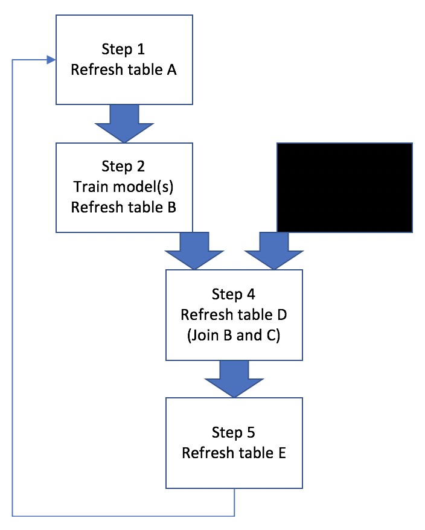
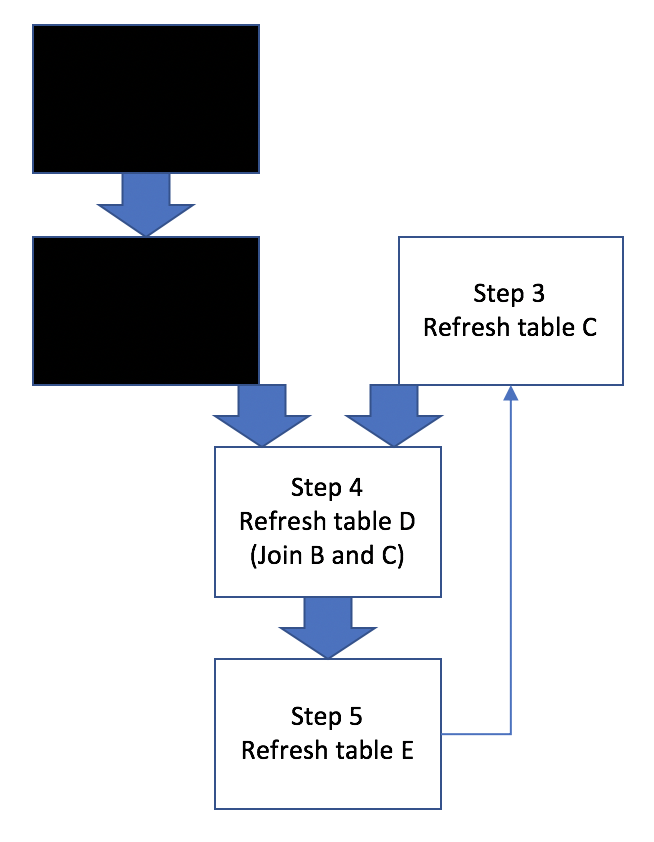

I’ve finally started using GNU make as a data analysis workflow management tool. I knew it existed as a software “build” tool, and although I always thought Makefile1 sound pretty cool, I never actually had to use it, not just as a build tool, but also as a data analysis workflow management tool.
It started with @thosjleepr’s tweet that showed up in my feed:
Inspired by @carlislerainey, I’ve added some code to my intro #make tutorial that visualizes the makefile’s dependency graph natively in R using #ggraph.
I never actually looked closely at what the author did in this nice tutorial, but rather ended up taking a detour and actually started looking more closely into using make as a workflow management tool. It so happened that at the time, I needed to keep running some set of scripts over and over depending on “refresh” status of each step, and so when I ran into this tweet, I decided to jump on using make finally, and now make is one of those topics that I wish I had learned and started using while at school2.
It’s been less than 2 weeks since I started using make, and I’m not a make expert by no means. Nonetheless, I like talking about data anlaysis workflow, so here’s my thoughts on using make as a data analysis workflow management tool as a reference. Since it’s my thoughts as of today, I’m sure some of my takes will change over time.
- It’s relevant to many data analysis projects.
From the Wikipedia on make (software):
Besides building programs, Make can be used to manage any project where some files must be updated automatically from others whenever the others change.
It makes sense many tutorials on make (especially in the context of using it together with R) that I encountered used generating some documents as a use case. E.g., use make to streamline updating plots and inserting newly refreshed plots in the final document output. My immediate need didn’t involve updating a report over and over, but rather looked something like Figure @ref(fig:workflow):
Basically this example workflow involves generating/refreshing several hive tables, training ML models, and joining hive tables. Sometimes all 5 steps need to be run in a proper sequence, other times only a subset of steps need to be run, like Figure @ref(fig:scenarios):


So if there’s anyone out there who’s on the edge and haven’t started using a tool like make for workflow management, thinking such tool is not relevant in data analysis, I hope above figures (and this post) provide some convincing argument for using it.
- It helped me put more efforts in modularizing codes.
A Makefile is a collection of one or more rules, with a single rule consisting of a target, dependencies, and commands. In order to use commands in a Makefile, it’s imperative that the codes can be run in command line, and not just in interactive environment (REPL).
I don’t know what’s the best way to write a “program” for a data analysis project, and many of my codes are still mostly used in interactive mode. With the use of make, however, I’m putting more efforts to make sure my codes are run in command line, and REPL is used only for checking snippet of codes, not the entirety. So instead of working exclusively in a REPL shell (say R and/or hive shell), I now try to make sure the script files work by starting them in command line.
This is an important shift, I think, that has more implications, and I’m sure I’ll have more to say about this shift in the future.
- It helps keep track of workflow dependency and documentation in one place.
This is a nice little benefit of using make that I liked nonetheless. When I work on a project for 2-3 days, take a break from it, and come back in 2-3 weeks, I want to be able to recall what I have done and start picking up on things with minimal effort. With a combination of comments and a sed command in a Makefile, helpful documentation/notes can be extracted from command line like below.
~$ make help
1_gen_tbl_A: generate/refresh table A
2_train_model: train ml model using table A and generate table B
3_gen_tbl_C: generate/refresh table C (not dependent on steps 1 and 2!)
4_join_B_and_C: join tables B and C as a prep for step 5
5_compare_B_and_C: compare B and C by creating a performance tableSoftware carpentry’s lesson on automation and make provides a how-to.
- There are many alternatives to GNU make.
The tool has been around for nearly 40 years now. Obviously, I like it for several reasons as a workflow management tool, but at the same time, there are some limitations that can make it less attractive nowadays. I have not done a thorough research on this, but there seem to be many alternatives, each one of which has its own strength and weakness.
R drake package is more R-focused than other pipeline tools, but more importantly, it has a very thorough and informative documentation on such tools in general.
Apache airflow is “a platform to programmatically author, schedule and monitor workflows.” I really like its ability to visualize dependencies.
Bash script: many data engineers that I know seem to be using bash scripts to do everything, including workflow mangement. It’s certainly a viable option, even when dependencies are considered, especially when you know what you’re doing.
There are some great tutorials and documentations on GNU make, and here are a couple more links as a reference.
GNU Make Manual
Make Intro by Karl Broman, Mike Bostock, Zachary Jones
Software Carpentry’s Lesson on Automation and Make